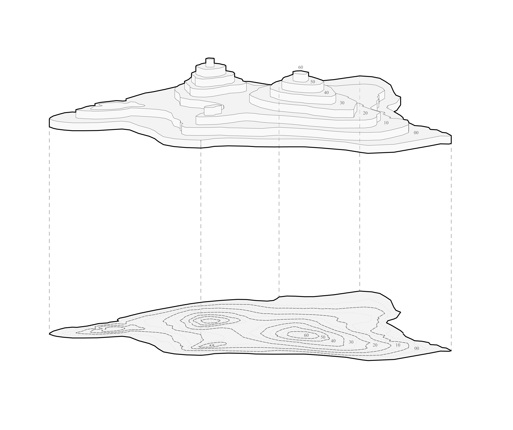

GEOMETRY PROCESSING · GRAPH ALGORITHMS · DIGITAL FABRICATION
Turning large sets of contour curves into structured terrain geometry for fabrication.
ironpython · grasshopper · breadth-first search
Contour Processing is a geometry-processing workflow for turning raw CAD contour curves into stepped terrain models.
The input data is often fragmented and difficult to use directly. The workflow cleans and organises the contours by elevation, builds adjacency relationships between neighbouring regions, and uses Breadth-First Search to identify the connected surfaces that belong to the terrain.
The method was implemented in IronPython for Grasshopper and tested on datasets containing more than 1,000 contour curves.

A key part of the workflow is representing the terrain regions as a graph. Each region becomes a node, while adjacency between regions defines the connections between them.
Breadth-First Search is then used to traverse this structure and identify the connected regions that form the terrain.
This turns a practical fabrication problem into a more general computational one: transforming noisy geometric input into a structured representation that can be searched, classified and rebuilt.
Once the relevant regions have been identified, the geometry is reconstructed as a stepped terrain model ready for CNC machining.